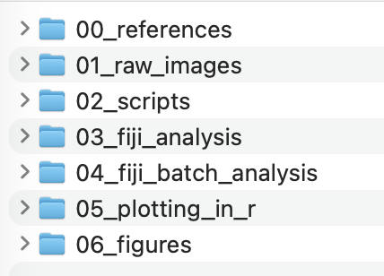
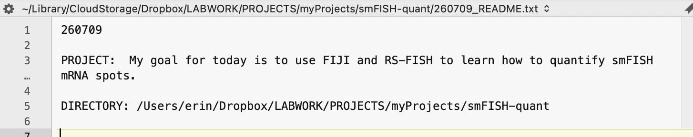
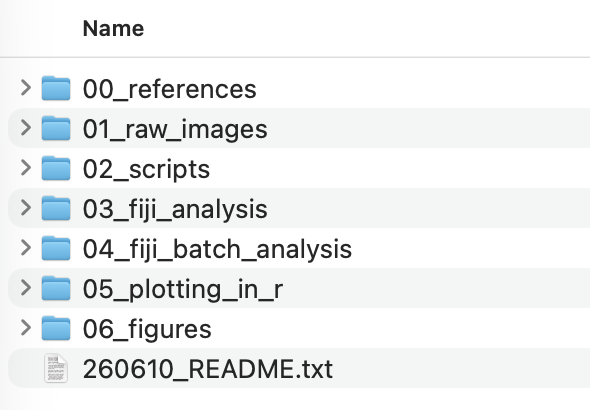

Starting a computational project#
Welcome! Let’s start a computational project to analyze smFISH data.
Create a project directory#
You will create a directory/folder on your local computer where we will conduct an smFISH quantification project. It is very important to have an intentional folder hierarchy for computational projects. This ensure that you can separate raw data, processed data, scripts, and final output. Follow along:
Let’s obtain the course content within a directory called
260710_quantify_smFISHNavigate inside
260710_quantify_smFISHand explore the following new sub-directories:
{kind=link}

Create a README.txt file#
It is very important to keep track of the steps you take in a computational project. This will be important to stay on task from day to day and to remind yourself what you have done when you look back on the project. Follow along:
Using a flat text editor (BBEdit, Notebook ++, and IDE, etc ) or another such flat text editor start a file called
<todaysdate>_README.txtReplacewith today’s date. Do not include the greater than or less than characters in the file name. Open the file and add some content like so:
{kind=link}

Best Practices
README.txt
Always keep your readme files in the main project directory. Don’t bury it in a subdirectory
Keep README.txt files up to date
At the end of each work session, record where you left off
Names of files and directories
Do not use spaces in names
Do not start names with a number
- and _ symbols are ok. Please avoid all others
Consider implementing dating system like 20260710 or 260710 that sort automatically
Double check your directory structure#
If your directory structure and README.txt file look like what is pictured below, you are all set!
{kind=link}

Continue on to the next lesson below.